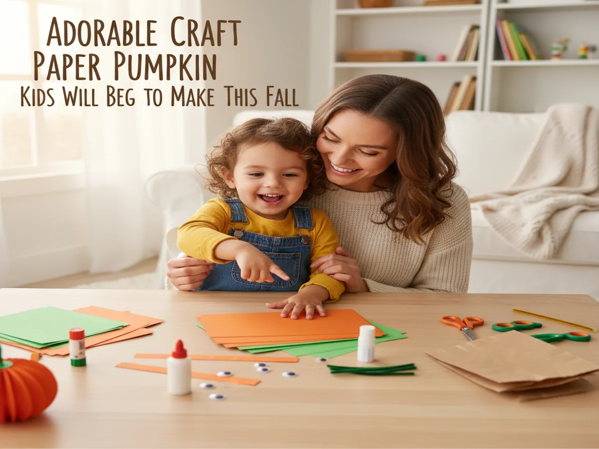
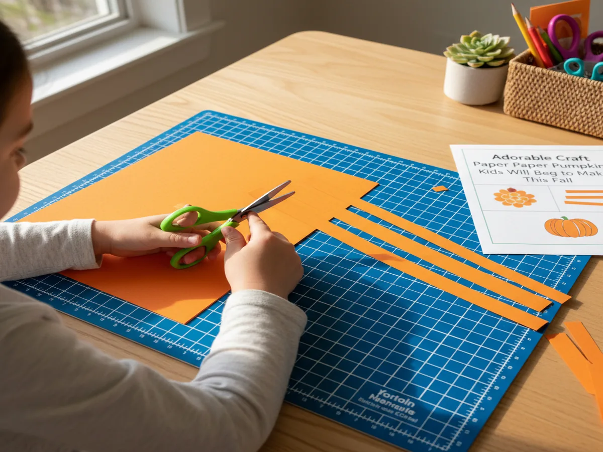
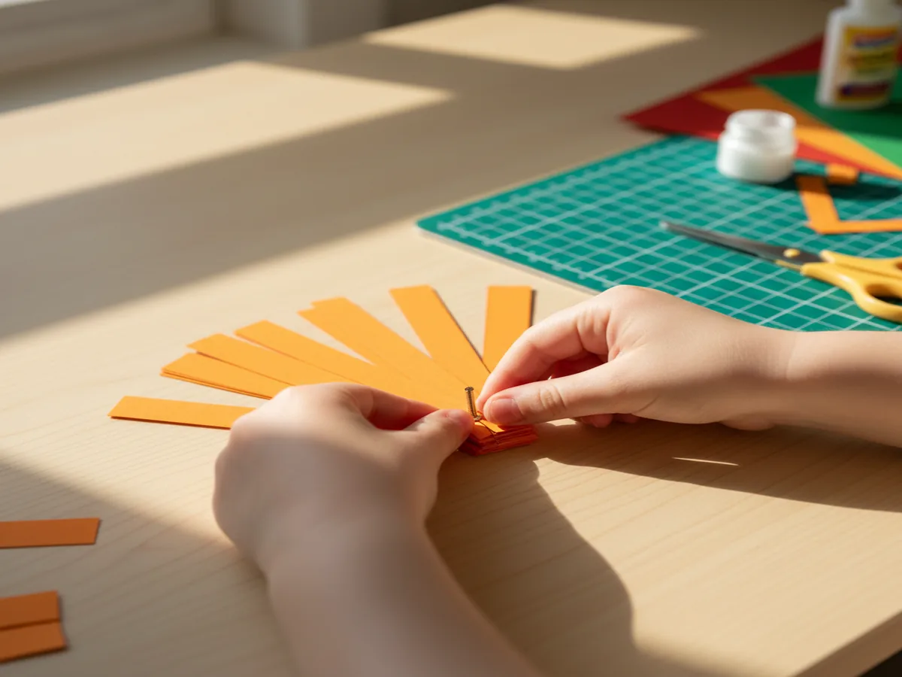
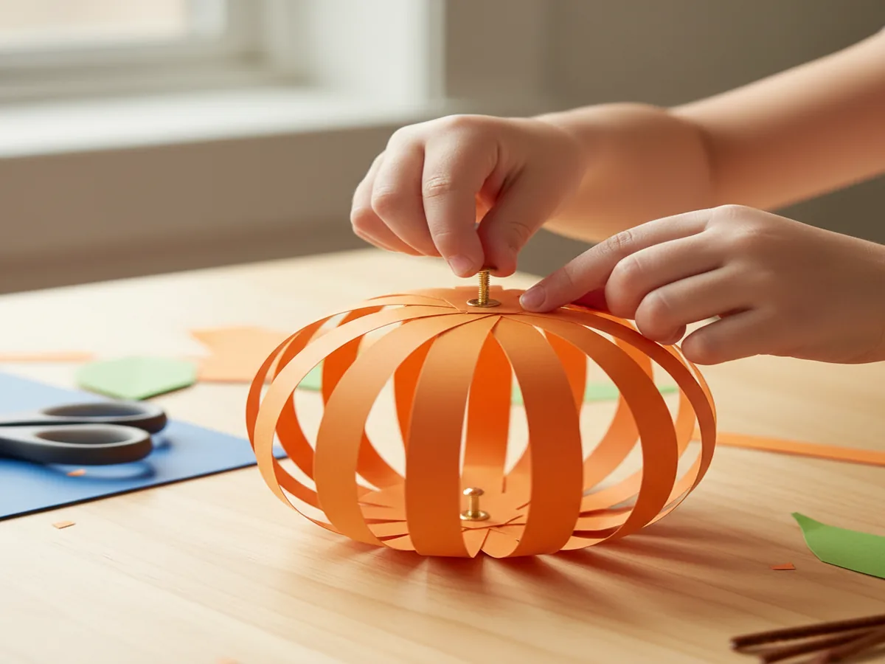
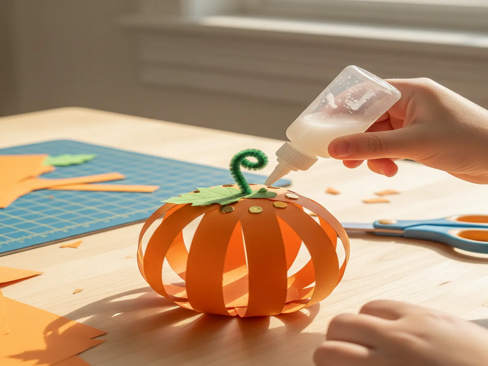
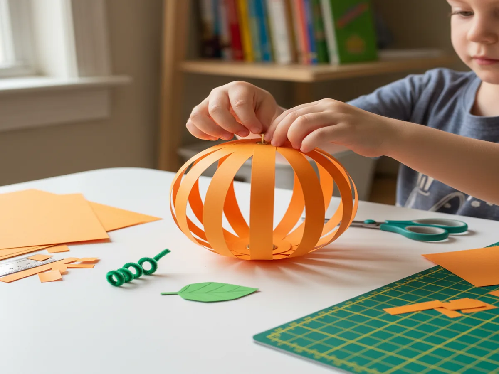

There's something about a chubby little pumpkin made from paper strips that just screams fall fun. If you're looking for a quick afternoon project that keeps little hands busy (and off the snack cabinet for fifteen minutes), this craft paper pumpkin is exactly what you need. It's simple, colorful, and so satisfying for kids to watch come together.
Why Kids Love This Craft
This easy paper pumpkin craft for kids is a winner because it gives them a sense of accomplishment fast. In about fifteen minutes, they go from a handful of paper strips to a round, bouncy 3D pumpkin they made all by themselves. That proud little grin when they hold it up? Worth every tiny paper scrap on the floor.
Beyond the fun factor, this project is sneakily educational. Cutting strips builds fine motor skills, and assembling them into a sphere shape helps little ones practice following steps in order. It's also a wonderful way to talk about fall, the harvest season, and all the cozy things that make autumn special. Whether you're doing this at home or in a classroom, it's a crowd-pleaser every time.

What You'll Need
- Orange construction paper (9x12 inch) is the star of the show, so grab at least 2 sheets per child.
- Green construction paper for the stem and leaf, one sheet is plenty for several pumpkins.
- Kids' safety scissors in a size comfortable for small hands.
- Washable glue sticks work best here since liquid glue can make the strips soggy.
- Brass paper fasteners (1-inch) to hold the strips together at the top and bottom.
- Green pipe cleaners for a curly vine accent, one per pumpkin.
- A pencil for tracing and marking strip widths.
- A ruler to keep strips even (a grown-up job for the youngest crafters).
- Single-hole punch to make neat holes in each strip's ends.
Step-by-Step Instructions
Step 1: Cut Your Paper Strips
Take your orange construction paper and cut it lengthwise into strips about 1 inch wide and 12 inches long. You'll need 6 to 8 strips per pumpkin. If you're working with toddlers, go ahead and pre-cut the strips yourself. Preschoolers and older kids can usually handle the cutting with a little guidance. Just draw pencil lines first so they have a path to follow.

Step 2: Punch Holes in Each Strip
Using your hole punch, make one hole at each end of every orange strip. Try to keep the holes centered and about half an inch from the edge so the paper doesn't tear. This is a great job for kids to do themselves since most preschoolers love the satisfying "click" of a hole punch. Stack a few strips together to speed things up if your punch is strong enough.

Step 3: Assemble the Pumpkin Shape
Here's where the magic happens! Stack all of your strips on top of each other, lining up the bottom holes. Push a brass paper fastener through the bottom holes and open the prongs to secure them. Now do the same at the top. You'll have what looks like a flat fan shape at this point.
Gently fan the strips outward one by one, spacing them evenly around the fastener until they form a round sphere. This is the moment kids gasp a little, because suddenly it looks like a real pumpkin! This is what makes the paper strip pumpkin craft for preschoolers so exciting. They get to see flat paper transform into something 3D right in their hands.

Step 4: Add the Stem and Leaf
Cut a small rectangle from your green construction paper, roughly 1 inch wide and 2 inches tall. Roll it into a little tube and glue the edge down to create a stem. Glue or tape the stem right on top of the pumpkin, covering the top brass fastener. Then cut a simple leaf shape from the green paper and glue it to the base of the stem. Kids who want to get fancy can cut two or three leaves of different sizes.

Step 5: Curl a Vine and Finish Up
Take a green pipe cleaner and wrap it around a pencil to create a cute spiral vine. Slide it off the pencil and tuck one end into the top of the pumpkin near the stem. You can secure it with a tiny dot of glue or just twist it around the brass fastener. And just like that, your craft paper pumpkin is complete! Hold it up, admire it from every angle, and find the perfect spot to display it.

Variations to Try
Patterned Paper Pumpkins. Instead of plain construction paper, try using scrapbook paper with fall patterns like plaid, polka dots, or tiny leaves. You can even mix and match patterns within the same pumpkin for a fun patchwork look. This is an easy way to elevate the craft for older kids who want something a little more "grown up."
Jack-o'-Lantern Faces. After assembling your 3D paper pumpkin craft for kids, cut out tiny triangle eyes and a jagged mouth from black paper. Glue them onto one of the front-facing strips for a friendly jack-o'-lantern. This is perfect for the week leading up to Halloween and lets kids practice cutting small shapes.
Construction Paper Pumpkin Patch. Make several pumpkins in different sizes by varying the strip lengths. Use strips that are 8 inches, 10 inches, and 12 inches long to create a little family of pumpkins. Line them up on a windowsill or mantel for an adorable fall paper pumpkin craft activity display that lasts all season.
More Crafts You'll Love
If this project put a smile on everyone's face, here are a couple more paper crafts your crew will enjoy:
- 20-Minute Craft Using Paper That Kids Will Beg to Make Again and Again
- 25 Adorable Christmas Paper Crafts Kids Will Beg to Make Every Year
Final Thoughts
This craft paper pumpkin is one of those projects that hits the sweet spot: easy enough for little ones, cute enough that you'll actually want to display it, and quick enough to squeeze into a busy afternoon. Whether you make one pumpkin or a whole patch, your kids are going to beam with pride every time they walk past their creation. If you give this craft a try, snap a photo and share it on Pinterest so other crafty families can find the inspiration too. We'd love to see your pumpkins! Happy crafting, friends.